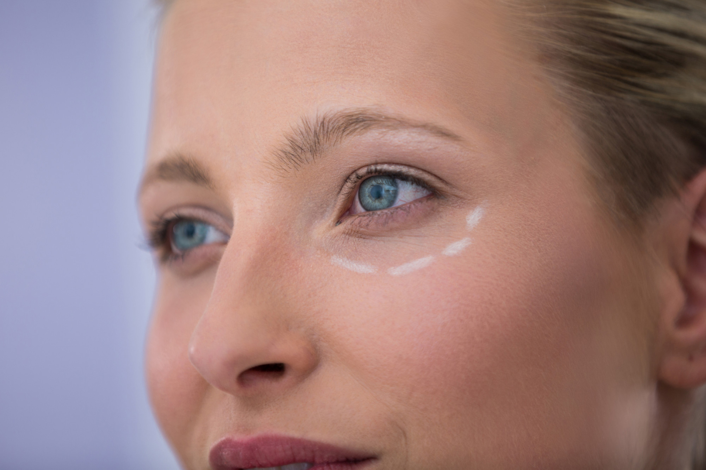

Kako prepoznati da li je potrebna blefaroplastika ili samo nehirurški tretman
Područje oko očiju jedno je od prvih mesta na licu gde se primećuju znaci starenja. Koža u ovoj regiji tanja je i osetljivija nego na ostatku lica, zbog čega brže reaguje na gubitak kolagena, promene u volumenu tkiva i ponavljane pokrete mimike.
Rezultat toga često su spušteni kapci, umoran izraz lica ili izraženiji podočnjaci. Savremena estetska medicina nudi širok spektar nehirurških procedura koje mogu poboljšati izgled regije oko očiju. Međutim, postoje situacije u kojima nehirurške metode ne mogu postići željeni rezultat.
Razumevanje razlike između funkcionalnih promena na kapcima i estetskih problema koji se mogu korigovati minimalnim intervencijama ključno je za donošenje pravilne odluke o tretmanu.
Zašto dolazi do spuštanja kapaka
Spuštanje kapaka najčešće je posledica prirodnog procesa starenja. Sa godinama dolazi do slabljenja vezivnog tkiva i smanjenja elastičnosti kože. Kada potporne strukture oslabe, koža gornjeg kapka počinje da se opušta.
Istovremeno dolazi do promena u rasporedu masnog tkiva oko očiju. Kod nekih osoba masni jastučići mogu postati izraženiji i stvoriti osećaj težine u području kapaka. Kod drugih dolazi do gubitka volumena koji stvara udubljenja i senke ispod očiju. Genetika takođe igra značajnu ulogu – kod pojedinih osoba spušteni kapci mogu biti prisutni i u mlađem životnom dobu zbog anatomije lica ili strukture kože.
Kada su nehirurški tretmani dovoljni
Nehirurški tretmani često su prvi korak u poboljšanju izgleda regije oko očiju. Ove metode posebno su efikasne kod blagih promena koje još nisu dovele do značajnog viška kože.
Botoks se često koristi za ublažavanje mimičkih bora oko očiju i podizanje spoljašnjeg dela obrve. Kada se pravilno primeni, može dati efekat blagog otvaranja pogleda i osvežavanja izraza lica.
Dermalni fileri koriste se za korekciju suznog žleba i poboljšanje volumena u regiji ispod očiju. Dodavanjem male količine hijaluronske kiseline može se smanjiti senka koja daje utisak umornog izgleda. Tretmani poput PRP terapije ili biorevitalizacije mogu poboljšati kvalitet kože, hidrataciju i elastičnost, što doprinosi svežijem izgledu područja oko očiju.
Kada se razmatra blefaroplastika
Blefaroplastika je hirurška procedura kojom se uklanja višak kože i masnog tkiva sa gornjih ili donjih kapaka. Ovaj zahvat razmatra se kada postoji izražen višak kože koji ne može biti korigovan nehirurškim metodama.
Jedan od jasnih znakova da je blefaroplastika prikladnija opcija jeste kada koža gornjeg kapka počinje da prekriva prirodnu liniju kapka. U takvim situacijama nehirurški tretmani ne mogu ukloniti višak tkiva. Kod donjih kapaka operacija se razmatra kada postoje izraženi masni jastučići ili višak kože koji stvara trajne podočnjake i umoran izgled lica.
Kako izgleda operacija kapaka
Blefaroplastika je jedna od najčešćih estetskih operacija lica. Zahvat se obično izvodi u lokalnoj anesteziji uz sedaciju ili u opštoj anesteziji, u zavisnosti od obima korekcije.
Tokom operacije uklanja se višak kože, a po potrebi se uklanja ili redistribuira masno tkivo. Rezovi se postavljaju u prirodnim naborima kapaka kako bi ožiljci bili minimalno vidljivi. Cilj procedure nije promena izraza lica, već vraćanje prirodne konture kapaka i osvežavanje pogleda.
Zašto je precizna procena ključna
Regija oko očiju kompleksna je anatomska zona gde male promene mogu značajno uticati na izgled celog lica. Zbog toga je detaljna analiza strukture kapaka, položaja obrva i kvaliteta kože ključna pre donošenja odluke o tretmanu.
Kod nekih pacijenata problem nije višak kože već spuštena obrva ili gubitak volumena u srednjem delu lica. U takvim slučajevima blefaroplastika sama po sebi ne bi rešila osnovni uzrok problema. Individualni pristup omogućava da se odabere procedura koja najbolje odgovara anatomiji lica i estetskim ciljevima pacijenta.